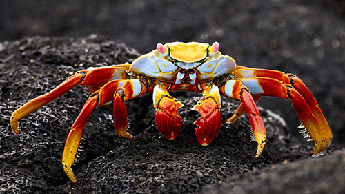

Cua

Cua hay cua thực sự là nhóm chứa các loài động vật giáp xác, thân rộng hơn bề dài, mai mềm, mười chân có khớp, hai chân trước tiến hóa trở thành hai càng, vỏ xương bọc ngoài thịt, phần bụng nằm bẹp dưới hoàn toàn được che bởi phần ngực. Động vật dạng cua có nhiều tại tất cả các vùng biển, đại dương.